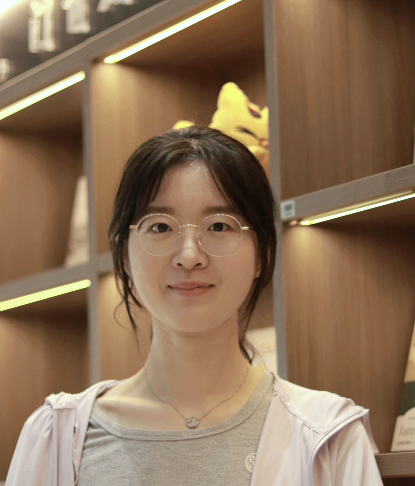

Dr. Kanglong Liu 刘康龙Associate Professor, Lab Director & Principal Investigator Department of Language Science and TechnologyHHB812c, Hung Hom Bay Campus, The Hong Kong Polytechnic University+852 2766 7451kl.liu@polyu.edu.hkCorpus-based TranslationQuantitative MethodsAI in TranslationTranslation TeachingHongloumeng Studieskl.liu@polyu.edu.hktrans-lab.github.ioDownload CV
Bonnie Ho Ling Kwok 郭浩羚PhD Student AG518, Core A, The Hong Kong Polytechnic Universityho-ling.kwok@connect.polyu.hkPsychological ApproachesCorpus-based StudiesTranslation Pedagogyho-ling.kwok@connect.polyu.hkDownload CV
 Lulu Wang 王璐璐PhD Student AG518, Core A, The Hong Kong Polytechnic Universitylulu99.wang@connect.polyu.hkCorpus-based TranslationAI and Translationlulu99.wang@connect.polyu.hkDownload CV